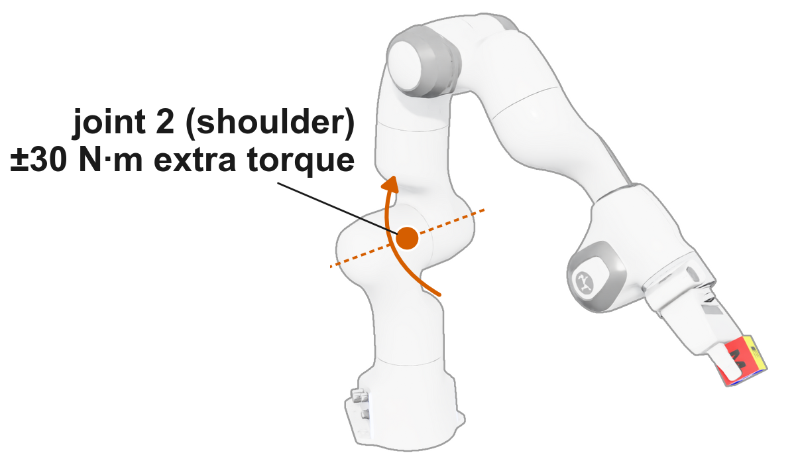

Physics-Informed Causal Reasoning for Nonstationary Robot Dynamics
PICR infers physical context from recent robot interactions and conditions a shared Lagrangian model to predict motion under changing payloads, without retraining the network.
How PICR works
A robot that picks up something heavier suddenly obeys different dynamics. Instead of retraining a model every time that happens, PICR looks at the last few moments of state and torque and infers a compact context that describes the current physical condition.
That context conditions a single Lagrangian dynamics network through FiLM. It modulates the learned inertia matrix and potential energy, and the Coriolis and gravitational forces are still derived from them, so the structure of the equations of motion holds for every context.
Adapt the inferred context, not the network weights.
The network is trained once, offline. A physically structured contrastive objective organizes the context by payload properties during training, but payload mass is not provided at inference: PICR estimates the dynamics-relevant context from recent interactions alone.
Result 1
In the demo at the top of the page, a Franka arm traces a 3D figure-eight while its payload grows from 0.1 to 4 kg, well past the 2 kg it saw in training. At every moment, each model predicts where the cube will be 0.3 s later. The top row overlays predicted cubes (coloured) on the true cube (grey); the bottom row accumulates prediction errors.
Payload mass is not provided at inference. PICR estimates it implicitly from how the arm has been moving and keeps the lowest error both inside and beyond the training range.
| Cube ADD (cm) ↓ | PICR | RWM | CaDM | CaDeLaC | DeLaN | Neural-Fly |
|---|---|---|---|---|---|---|
| Seen (0.1–2 kg) | 4.58 | 7.09 | 6.79 | 9.07 | 6.82 | 7.66 |
| Unseen (2–4 kg) | 6.92 | 11.63 | 10.90 | 24.75 | 25.65 | 24.78 |
Selected baselines are shown in the video; the table gives the full comparison.
PICR achieves the lowest prediction error among the evaluated models in both payload ranges. On unseen payloads it reaches 6.92 cm ADD, compared with 10.90 cm for the best baseline.
Result 2
A good dynamics model should answer "what if" questions. Here the state and payload are identical, and only joint 2, the shoulder joint that swings the whole arm forward and back (second from the base), receives an extra ±30 N·m of torque. Does the model know which way, and how far, the arm will move?

Across intervention sizes from ±10 to ±40 N·m, PICR keeps a stable acceleration response, while baselines lose response at larger offsets.
Result 3
Payload-based supervision organizes the context during training. At inference, PICR recovers the dynamics-relevant context from interaction history alone. The following experiments show how this context changes and how it influences predictions.
The robot is carrying 3 kg. We keep the initial state and the future torques fixed and change only the context, then predict 0.24 s ahead. With a context from a lighter payload, the predicted arm drifts as if the object were lighter.
The model applies different dynamics depending on the context, so the same action leads to a different predicted outcome.
The robot lifts 0.1, 1.19 and 2 kg objects. Before the lift the three contexts overlap; within about 0.4 s after lifting, each moves to the region of its own mass.
During figure-eight tracking, the payload is slowly changed from 4 to 0.1 kg and back from 0.1 to 4 kg. The context moves along with it in real time.
Result 4
Because PICR predicts torque as τ = H(q, z)q̈ + c + g, we can open it up and look at each term. Without direct supervision on individual mechanical components, PICR learns gravity and inertial terms that approximately agree with simulator references, even while carrying an unseen 3 kg payload.
When the payload switches mid-episode, PICR's gravity and inertia terms reach 90% of the reference change within 200 ms.
Resources